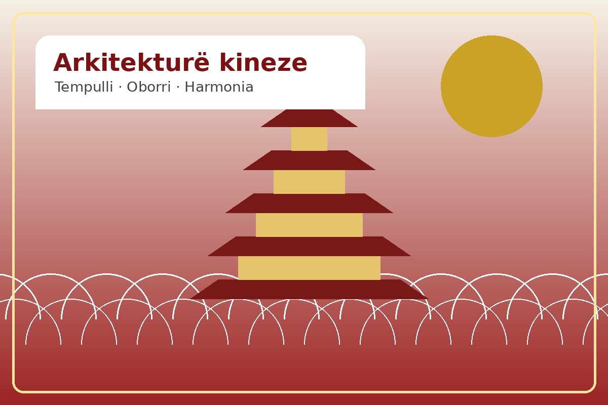
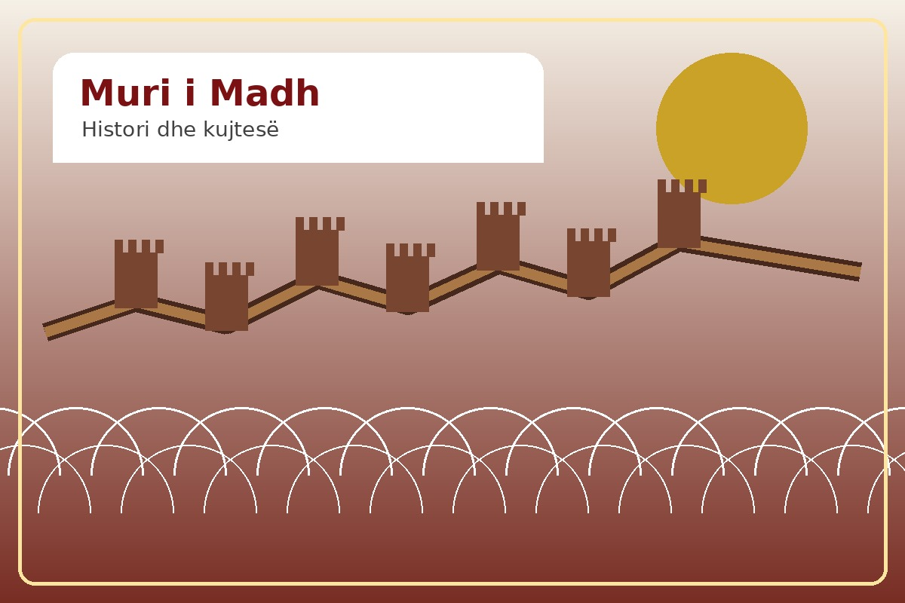
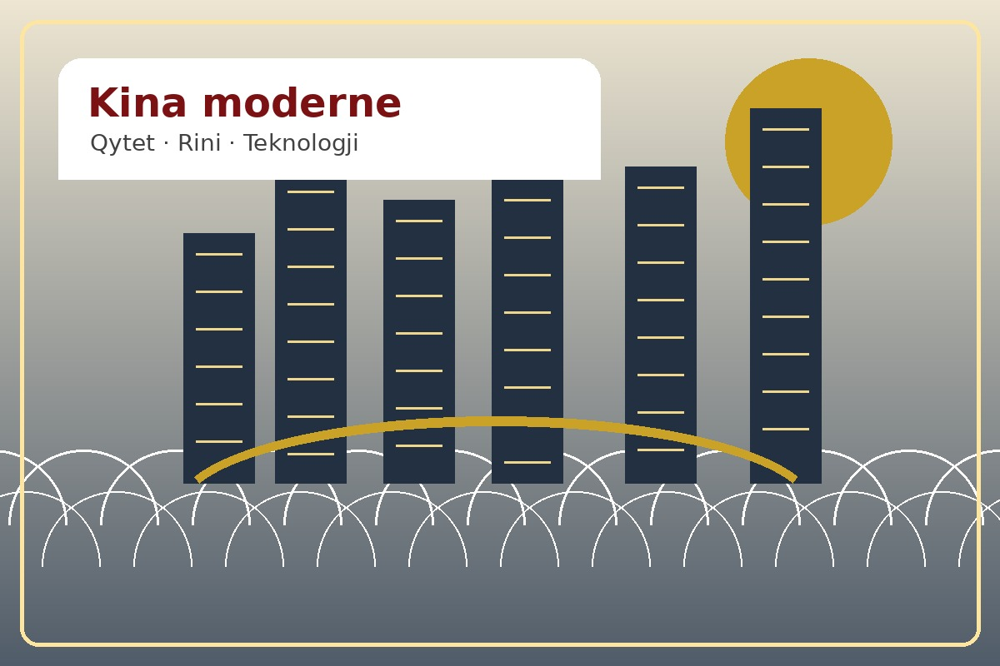
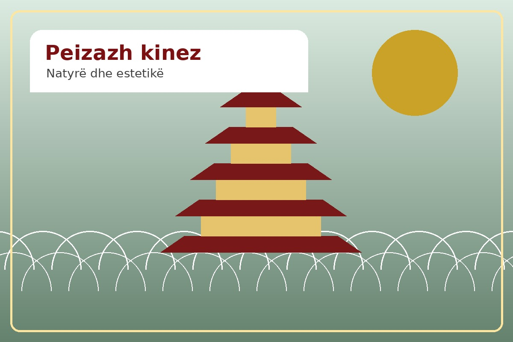
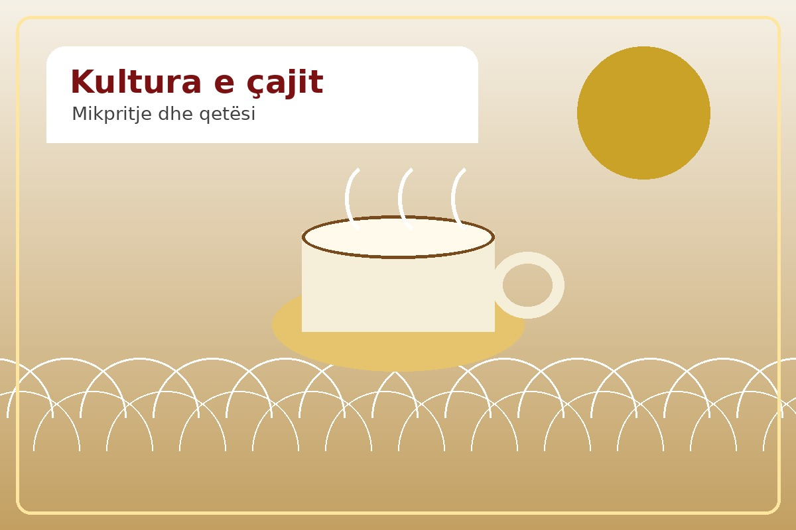
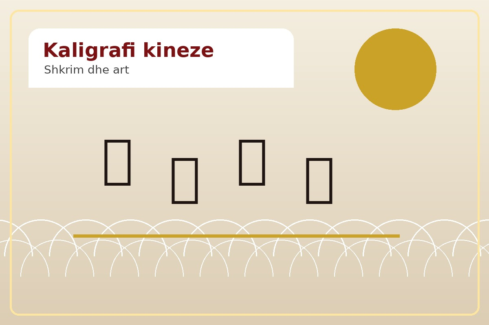
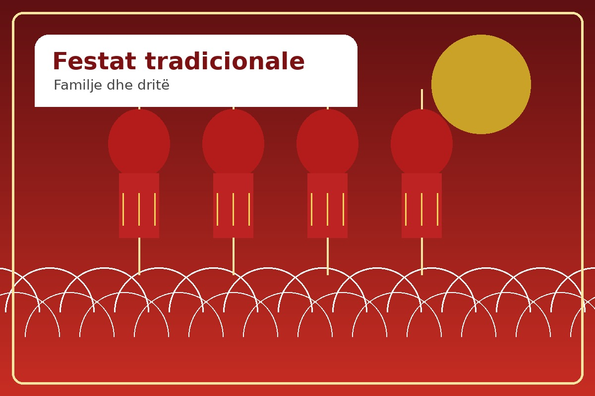
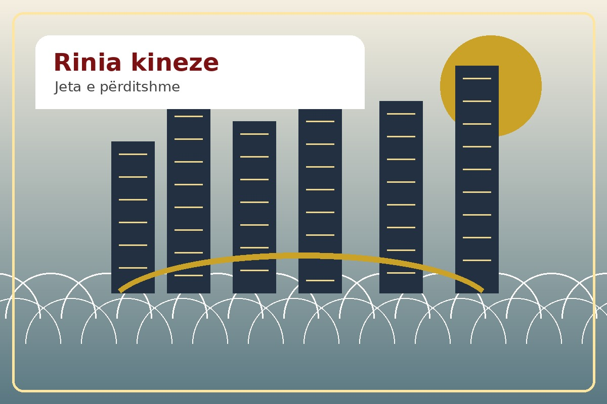
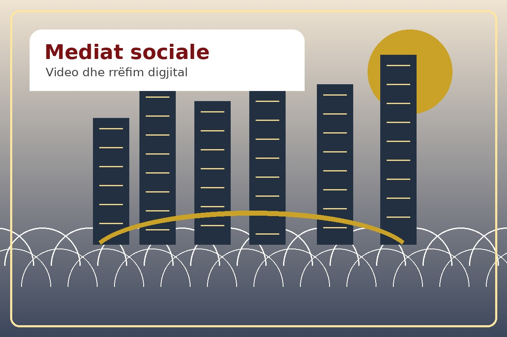

Kjo faqe prezanton kulturën kineze për publikun shqiptar: nga arkitektura dhe çaji deri te kaligrafia, festat tradicionale, jeta urbane dhe mënyra se si Kina komunikohet sot në mediat sociale.
Kultura kineze është një nga traditat më të vjetra dhe më të pasura në botë. Ajo përfshin filozofi, arte, kuzhinë, arkitekturë, festa, gjuhë dhe mënyra të veçanta të të menduarit për marrëdhënien mes njeriut, natyrës dhe shoqërisë.
Përmes MegjiKina, kjo kulturë prezantohet në mënyrë të thjeshtë, vizuale dhe të afërt për shqiptarët: me fjalë të përditshme, video të shkurtra, histori njerëzore dhe krahasime kulturore.
vite histori dhe trashëgimi kulturore
grupe etnike dhe tradita të ndryshme
terma diellorë në kalendarin tradicional
njerëz dhe jetë të larmishme moderne




Kultura kineze nuk është vetëm histori e largët. Ajo jeton në qytete, në festa, në gjuhë, në ushqim dhe në mediat sociale të të rinjve.
Tempulli, oborri tradicional, çatia e lakuar dhe ngjyra e kuqe shprehin rend, harmoni dhe estetikë simbolike.

Kultura e çajit është mënyrë komunikimi: një filxhan çaj mund të shprehë respekt, qetësi dhe afërsi njerëzore.

Shkrimi kinez është një sistem gjuhësor dhe një art vizual. Çdo karakter mbart formë, ritëm dhe kuptim.

Viti i Ri Kinez, Festa e Fenerëve, Festa e Mesvjeshtës dhe Duanwu lidhin familjen, kujtesën dhe kalendarin tradicional.

Kina moderne shihet në metro, universitete, kafene, platforma digjitale dhe krijimtarinë e të rinjve.

Videot e shkurtra dhe tregimet vizuale e bëjnë kulturën kineze më të lehtë për t’u kuptuar nga publiku ndërkombëtar.
Hyr në faqet e tjera për të njohur festat, kategoritë kulturore dhe historinë e shkëmbimeve Kinë-Shqipëri.
Disa fjalë bazë në kinezisht dhe shqip që ndihmojnë vizitorët shqiptarë të afrohen me kulturën kineze.
Vendi që kjo faqe synon të prezantojë.
Tradita, arti, mënyra e jetesës dhe vlerat.
Një fjalë e thjeshtë për lidhje njerëzore.
Një simbol i mikpritjes dhe qetësisë.
Hapi i parë i çdo komunikimi.
Një mënyrë për të shprehur mirënjohje.